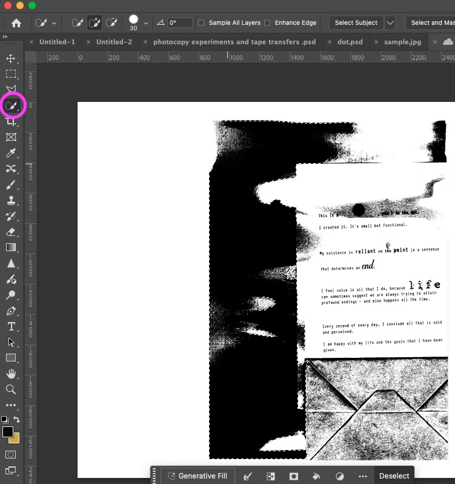
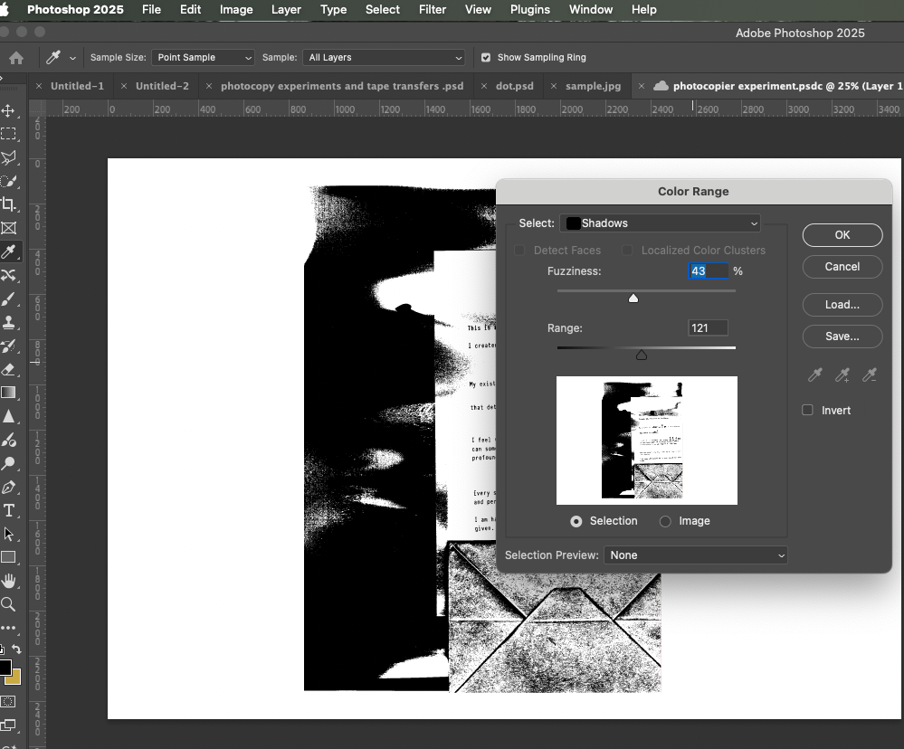

Digital Editing of Photocopier Images

In this class, you will learn how to edit photocopier images using Photoshop. You will make your images more interesting for your design projects.
- Photocopier: A machine that makes copies of documents and images
- Digital editing: Changing images using computer software
- Selection: Choosing specific parts of an image to edit
- Threshold: Converting an image to pure black and white with no gray
- Text on Path: Making text follow the contours of a shape or line
⚠️ HOMEWORK: Make Photocopier Experiments Before Class
Easy Experiment Ideas:
- Move images during scanning to create blur
- Hold scanner lid open for light effects
- Add paper or plastic on top of your image
- Make copies of copies (repeat 2-3 times)
Bring to Class:
- Your 2-3 scanned photocopier experiments (300dpi)
- Original research images for your project
- Images of artists that inspire you
- Notes about what techniques you used
Artist Examples


Today's Class (2.5 hours)
Hour 1
- Select parts of your photocopied images
- Create high-contrast images with Threshold
- Turn selections into paths for text
Hour 2
- Add text on paths in your images
- Use blend modes to combine elements
- Add quotes and references to your work
Final 30 Minutes
- Finish your compositions
- Add citations and references
- Save your work and upload to Padlet
Example: William Larson Style
Student Example (Paolo Bensimon 2024)

This student example shows photocopier experiments with digital editing
Artist Factual Information Example
"Larson used a Graphic Sciences DEX 1 Teleprinter, a sophisticated early fax machine, which converted pictures, text and sound into digitally-generated audio signals. These signals were transmitted over a telephone line and a stylus burned the image onto a special carbon-based paper, creating a unique "electronic drawing.""
— William Larson, on his Fireflies series (1969-78)
Harvard Reference Example
Larson, W. (1978) Fireflies [Teleprinter prints]. The Museum of Modern Art, New York.
Tillmans, W. (2014) Paper Drop [Photographic print]. Tate Modern, London.
How to Select Parts of Images

In today's class, you will learn how to select specific parts of your photocopier experiments:
Selection Tools Tutorial
Perfect for selecting areas in high-contrast photocopies:
- Select Magic Wand Tool (W)
- Set Tolerance (20-40 is good for photocopies)
- Click on a black or white area
- Hold Shift to add more areas
- Hold Alt/Option to remove areas

Quickly select areas by painting:
- Select Quick Selection Tool (also under W)
- Paint over the area you want to select
- Adjust brush size with bracket keys [ and ]
- Good for larger areas in photocopies

Select areas based on color - perfect for high-contrast photocopies:
- Go to Select → Color Range
- From the "Select" dropdown, choose "Shadows" (for black areas) or "Highlights" (for white areas)
- Adjust the "Range" slider to control how much gets selected
- Adjust "Fuzziness" slider (try 40-80 for photocopies)
- Click OK to create your selection
- This works much better than Magic Wand for detailed areas

This is essential for the text-on-path technique:
- Make a selection using any method
- Right-click and choose "Make Work Path"
- Set Tolerance to 1.0 for smoother paths
- The path will appear in the Paths panel

Tip: Save Your Selections
You can save your selections to use them again later:
- Make a selection
- Go to Select → Save Selection
- Give it a name and click OK
- To use it again later: Select → Load Selection
Why this is useful: You can apply different effects to the same area without having to select it again.
Threshold and Text on Path Technique

Create striking high-contrast images with text on paths, inspired by William Larson's teleprinter work:
Threshold and Text on Path Tutorial
First, duplicate your layer (Ctrl/Cmd+J) to keep your original image safe.
- Select your duplicated layer
- Go to Image → Adjustments → Threshold
- Move the slider until you have good black/white balance
- Click OK

- Use the Magic Wand tool (W) to select black or white areas
- Right-click the selection and choose "Make Work Path"
- Set Tolerance to 1.0 for smooth paths
- Now you have a path that follows your image shapes
- Select the Type tool (T)
- Move your cursor near the path until it changes to a curved text icon
- Click on the path and start typing
- Add quotes, references, or your own writing
- Use a typewriter font like Courier or Orator Std

- Try different blend modes for your text layer
- Multiply: Text integrates with dark areas
- Screen: Text shows up on dark backgrounds
- Overlay: Creates high contrast effect
- Adjust opacity to make text subtle or bold

William Larson Style Example
Why This Works:
- Threshold creates the clean black/white contrast
- Text on path follows the image contours naturally
- Typewriter font matches the teleprinter style
- Multiple text paths create layered information
- Perfect for adding quotes and citations to your work
Additional Special Effects
Other Useful Filters
Makes your image look more like a photocopy
Shows just the edges in your image
Creates a poster-like effect
Makes your image look wavy
Try these after applying the Threshold effect for more variety in your designs.
Smart Objects Tip
Convert your layers to Smart Objects before applying filters:
- Right-click on your layer
- Select "Convert to Smart Object"
- Now apply filters - they'll be non-destructive
- You can change or remove filters later
- Double-click filter name in Layers panel to edit settings
Remember: Smart Objects keep your original image quality intact!
Blend Modes for Combining Images
Blend modes help you combine different layers in interesting ways:
Best Blend Modes for Text on Path
Multiply
Makes text blend into dark areas - good for white text
Screen
Makes text stand out on dark backgrounds - good for black text
Overlay
Creates high contrast text that adapts to background
Difference
Creates negative-like text effects
Hard Light
Makes text stand out with maximum contrast
Blend Mode Examples


How to Layer Images for Good Results
Base Layer Strategy
- Start with your main photocopier experiment
- Apply Threshold to create high contrast
- Add different text paths on separate layers
- Apply different blend modes to text layers
Multiple Text Layer Strategy
- Create multiple text paths following different contours
- Use different fonts and sizes for variety
- Add quotes, references, and your own words
- Apply different blend modes to each text layer
- Adjust opacity for text layers to control prominence
Adding Text and References
Adding Text and Citations
Adding text and references is important for academic work and creates a professional design:
Adding Artist Quotes
- Create new text layer (T key)
- Select a good font (see list below)
- Type or paste your quote
- Make quote text italic
- Add quotation marks and artist name
- Add a semi-transparent background for better reading
"I became interested in the idea that you could send image information over telephone lines... and that you could interfere with that information."
— William Larson (1978)
Harvard References
- Create new text layer
- Use a typewriter font (Courier, Andale Mono)
- Include full Harvard reference format:
Larson, W. (1978) Fireflies [Teleprinter prints]. The Museum of Modern Art, New York.
Tillmans, W. (2014) Paper Drop [Photographic print]. Tate Modern, London.
Guyton, W. (2007) Untitled [Digital print on linen]. The Museum of Modern Art, New York.
Good Fonts to Use
Recommended Fonts:
Andale Mono
clean look for references
Orator Std
good spacing, good for quotes
Typewriter Condensed
looks good with photocopied materials
Class Activity (2.5 hours)
During today's class, create a digital composition using your photocopier experiments. Follow these steps:
1. Setup (15 mins)
- Create new A3 document (300dpi)
- Import your photocopier experiments
- Organize your layers with names
2. Threshold & Selection (45 mins)
- Apply Threshold adjustment
- Make selections of interesting areas
- Convert selections to paths
- Save your paths in the Paths panel
3. Text on Path (45 mins)
- Add text along your saved paths
- Try different fonts and sizes
- Add quotes and artist references
- Experiment with different blend modes
4. Final Composition (30 mins)
- Try different blend modes
- Adjust opacity levels
- Add additional filters if needed
- Refine text positioning
5. Finishing Touches (15 mins)
- Add formal Harvard references
- Check all text is readable
- Ensure design connects to your Term 2 project
- Save your work in PSD format with all layers
Finishing & Uploading to Padlet
Before Uploading Your Work:
 Check connection to Term 2 project
Check connection to Term 2 project
 Make sure all references are included
Make sure all references are included
 Save PSD files with all layers
Save PSD files with all layers
 Export as JPG for upload
Export as JPG for upload
Uploading to Padlet
Upload two items that connect to your Term 2 design project:
1. Original Photocopier Experiments
Upload your scanned photocopier experiments:
- Include at least 2 different techniques
- Write a short description of what you did
- Explain how they relate to your Term 2 project
2. Digital Composition (A3)
Upload your final digital work:
- Show threshold and text on path techniques
- Include proper artist reference/quotation
- Show clear connection to Term 2 project
- Demonstrate William Larson-inspired style